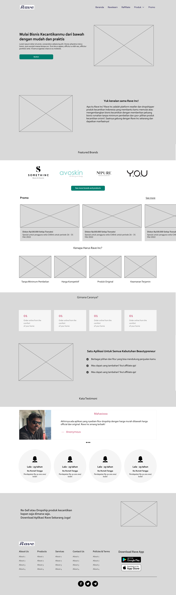
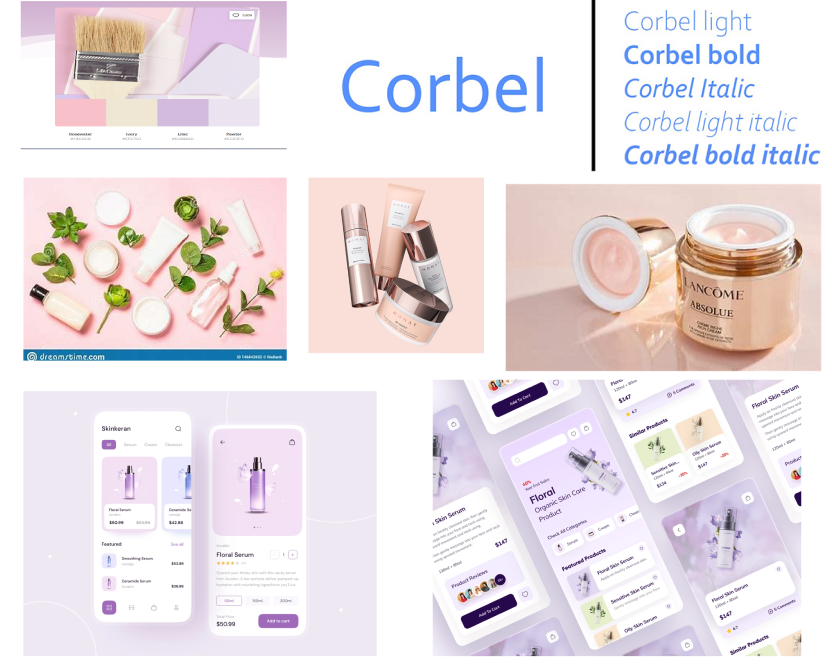
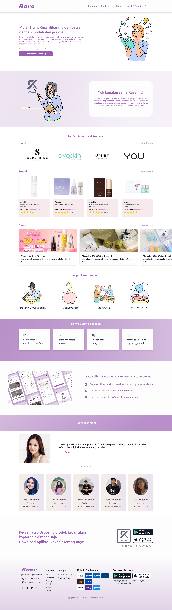
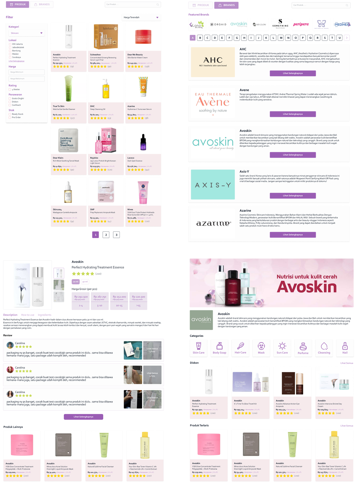

Ringkasan Proyek
Jenis Projek
Projek Tim (Studi Independen)
Peran Saya
UI Designer, UX Designer
Linimasa
8 Minggu (Juni - Juli 2022)
Tools
Figma, Trello, Zoom, Figjam
Masalah (The Problem)
Sebuah brand skincare premium memiliki produk yang sangat baik namun penjualannya masih sangat bergantung pada tim sales offline. Mereka tidak memiliki "wajah digital" yang mampu menarik calon mitra bisnis (reseller, klinik) secara online. Informasi produk tersebar dan tidak ada satu tempat pun bagi calon mitra untuk memahami keunggulan brand dan produk yang ditawarkan.
Tujuan: Merancang landing page yang berfungsi sebagai "etalase digital" untuk membangun citra brand, menampilkan katalog produk, dan yang terpenting menghasilkan prospek dari calon mitra bisnis yang berkualitas dengan mempromosikan aplikasi Rave untuk melakukan transaksi sebagai reseller atau mitra.
Proses Desain
Fokus utama bergeser dari fungsionalitas ke persuasi. Bagaimana cara meyakinkan pengunjung dalam waktu singkat? Saya merancang alur naratif landing page untuk memandu pengunjung dari ketidaktahuan hingga keinginan untuk bermitra.
1. Alur Naratif & Wireframing
Saya menyusun wireframe dengan alur: Hook (Headline Kuat) -> Value Proposition (Kenapa Kami?) -> Product Showcase (Katalog) -> Social Proof (Testimoni) -> Promosi aplikasi Rave. Setiap bagian dirancang untuk menjawab pertanyaan calon mitra dan membangun kepercayaan.
2. Desain Visual yang Premium
Untuk mencerminkan kualitas produk, desain visual dibuat elegan, bersih, dan menggunakan fotografi berkualitas tinggi. Palet warna dipilih untuk memberikan kesan mewah namun tetap terpercaya.
Solusi Desain
Solusi akhirnya adalah landing page yang kaya visual namun tetap cepat diakses, dengan satu tujuan yang jelas: mengajak pengunjung untuk mengisi formulir kontak untuk menjadi mitra.
Hero Section & Value Proposition
Bagian teratas langsung menyajikan keunggulan utama menjadi mitra, seperti "Margin Tinggi, Dukungan Pemasaran, dan Produk Teruji Klinis", untuk menarik perhatian sejak detik pertama.
Katalog Produk sebagai Etalase
Berbeda dari web e-commerce, katalog di sini tidak memiliki tombol "Beli". Tujuannya murni untuk menunjukkan ragam dan kualitas produk. Setiap item ditampilkan dengan gambar yang menarik dan deskripsi singkat, membangkitkan rasa ingin tahu.
Hasil & Pembelajaran
Setelah dilakukan user testing, landing page ini berhasil menrespon positif dari pengguna, pengguna yang menggunakan web ini merasa ini adalah web yang sangat informatif dan lengkap untuk dipakai sebagai media promosi aplikasi mobile dan juga sebagai katalog produk yang sangat detail.
Pelajaran utama: Untuk landing page B2B, membangun kredibilitas melalui desain profesional dan alur informasi yang logis adalah kunci. Setiap bagian harus memiliki tujuan yang jelas untuk memandu pengunjung menuju satu aksi utama, yaitu mengarahkan untuk mengunduh aplikasi mobilenya.